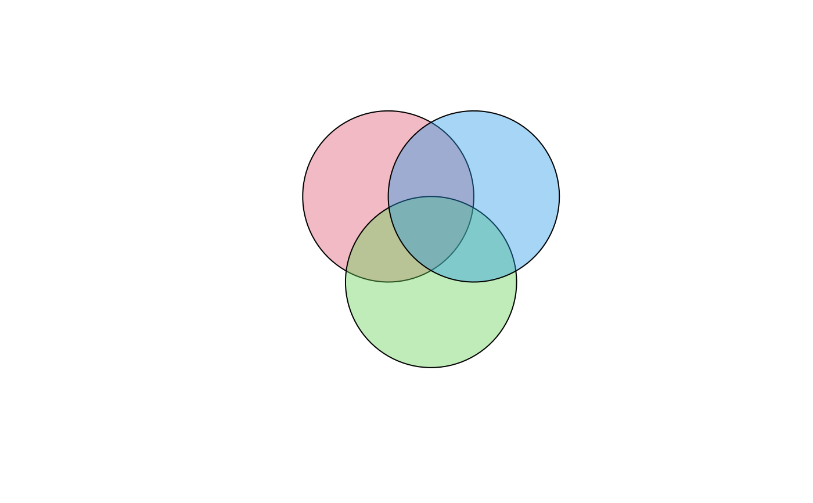
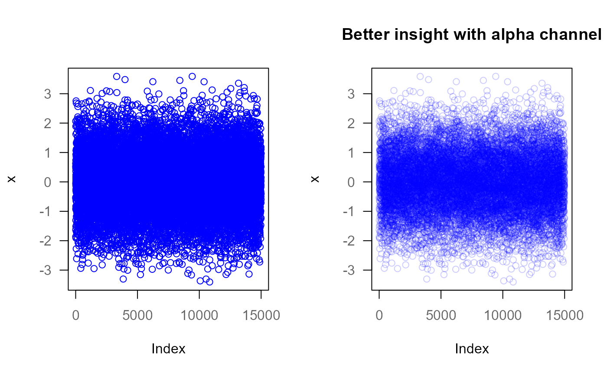

Add transparency to colors.
See also
Other color:
colToOpaque(),
colToRGB(),
contrastColor(),
darken(),
findColor(),
grayscale(),
hcol(),
hexToRGB(),
lighten(),
mixColors(),
pal(),
palNames(),
setBackCol()
Examples
op <- par(no.readonly = TRUE)
addAlpha("yellow", 0.2)
#> yellow
#> "#FFFF0033"
addAlpha(2, 0.5) # red
#> [1] "#DF536B80"
canvas(3)
polygon(circle(x=c(-1,0,1), y=c(1,-1,1), radius=2),
col=addAlpha(2:4, 0.4))

x <- rnorm(15000)
par(mfrow=c(1,2))
plot(x, type="p", col="blue" )
plot(x, type="p", col=addAlpha("blue", .2),
main="Better insight with alpha channel" )

par(op)